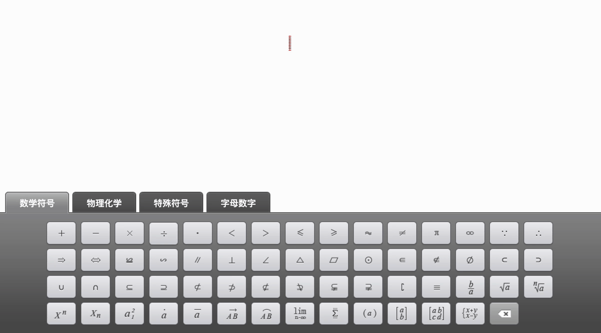
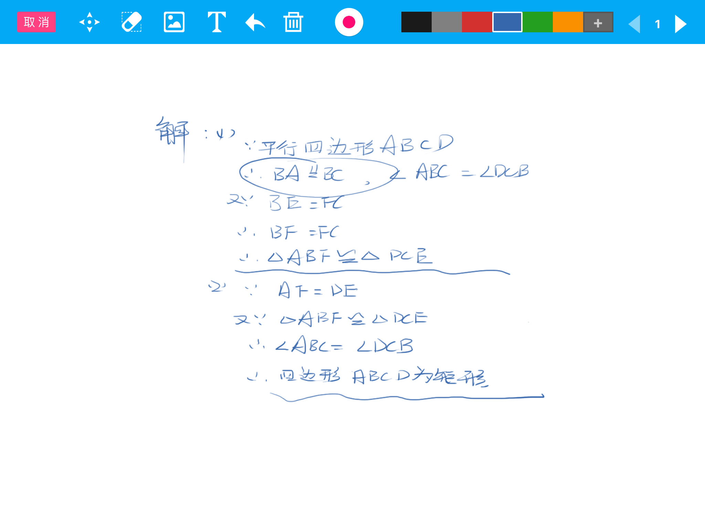
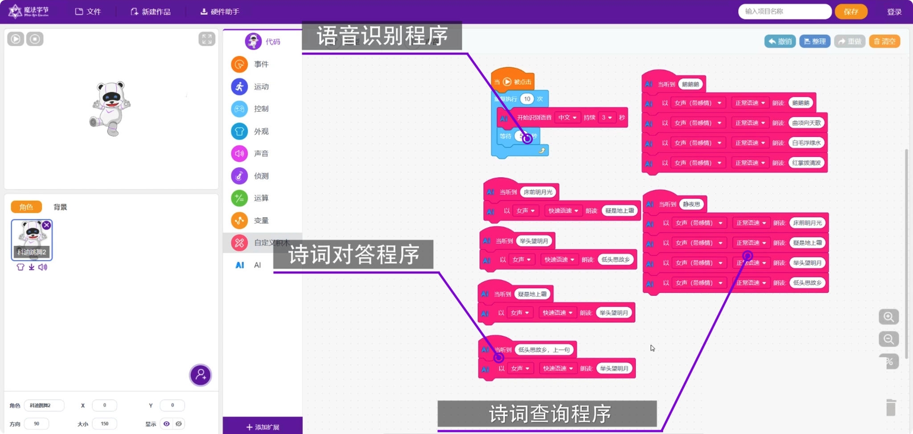

部分项目展示

数学公式编辑器
这个是早期独立负责的一个小项目，实现在网页上输入公式。主要为了解决以下需求：
- 教师在录入新题目到题库的时候，公式自动变成标准的 MathML 存储，方便数据标准化、前端渲染以及题库搜索
- 学生在使用题库的时候，可以输入公式来搜索题目

iOS & Android 微课程录制 App
独立开发的 App，方便教师录制讲解题目或知识点的微课程。App 业务功能开发本身并不复杂，核心在于两点：
- 使用自定义数据文件格式替代视频格式，从而实现 30 分钟的录制课程文件大小在 5 MB 左右
- 让电磁笔在屏幕上的书写体验和效果接近实际用笔在纸上书写的体验

针对青少年的积木编程平台
这是一个基于 Scratch 3 积木技术打造的针对青少年的编程教育平台。核心理念是以 PBL （项目制学习） 为基础，培养青少年的计算思维 (Computational Thinking)。
技术方面，核心是对接市面上各种智能硬件，比如无人机、Arduino 机器人、micro:bit 等。我负责了整个项目的技术选型、框架搭建，以及实现对接各硬件的通用通信协议，如 USB 串口、蓝牙、Wi-Fi、WebSocket 等。

iPhone 模拟激光笔
这是一个实验性的 App。一个 Windows 端基于 Electron 技术的软件作为通信服务端，iPhone App 端利用 iPhone 的陀螺仪系统实现晃动手机移动电脑上的激光点位置并实现对屏幕进行划线标注。
该创意申请了一个专利，信息如下：
- Patent Grant Number: CN207764746U
- Application Number: 2017211962818